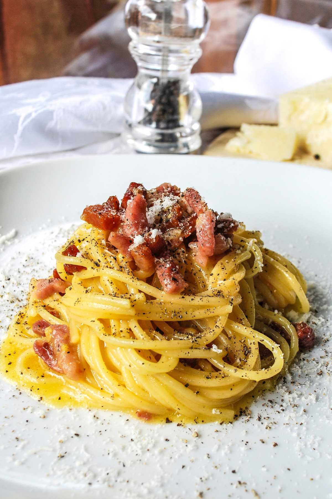

Carbonara
Go back

Description
Spaghetti Carbonara is one of the most famous pasta dishes from Roman cuisine. This authentic Italian Carbonara
recipe is made with just five simple ingredients: spaghetti, crispy guanciale, black pepper, Pecorino Romano, and
eggs.
The secret to authentic Carbonara lies in using high-quality ingredients and following the original Roman method.
You don’t need anything else—no cream, no milk, no garlic, no onion, no pancetta, no bacon. The traditional recipe
is all about simplicity and balance.
Ingredients
- 350 g (12 oz) spaghetti (traditionally used for Roman Carbonara)
- 200 g (7 oz) guanciale (Italian cured pork cheek)
- 4 eggs (1 egg per serving)
- 100 g (about 1 cup) finely grated Pecorino Romano DOP
- Freshly ground black pepper, to taste
Steps
- First, bring a pot of water to a boil while you get the carbonara sauce ready.
- Cut the guanciale into small pieces—cubes, slices, whatever you prefer. Cook it in a skillet over medium heat
for
2-3 minutes, stirring occasionally so it cooks evenly. Once the guanciale is ready, turn off the heat, and set it
aside.
- Now, let's make the pecorino cream. In a bowl, whisk together the whole eggs and finely grated Pecorino
Romano until smooth and creamy.
- Add some freshly ground black pepper. Then, mix quickly with a fork - or a hand whisk - until you have a
creamy sauce.
- This egg and pecorino cheese sauce should be thick and creamy. Set it aside for now.
- Salt the boiling water (about 10 g per liter) and cook the spaghetti al dente according to package instructions.
- Using a spoon for spaghetti, drain the pasta when ready. Transfer the hot spaghetti directly to the
skillet with the guanciale.Toss briefly OVER HIGH HEAT to coat the pasta in the rendered fat.
- When the spaghetti and guanciale are sizzling in the pan, TURN OFF THE HEAT—otherwise the eggs will cook
too much, and you'll end up with scrambled eggs instead of a creamy carbonara!
- Right away, pour the egg and pecorino mixture over the hot pasta and stir quickly. Since the pan is no longer on
the
heat, the eggs will cook gently, creating a smooth and creamy texture without lumps.
- Keep an eye on the consistency—it should be velvety, not too runny:
- Authentic spaghetti carbonara is ready! So, with the help of a ladle and a fork, create a pasta nest and
place it on a plate.
- Add the guanciale (what's left in the pan), freshly ground black pepper and grated pecorino romano to
taste. Serve and enjoy!